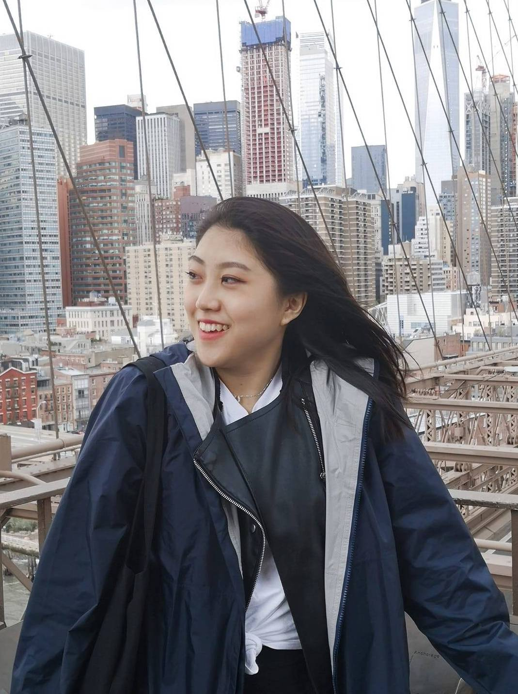

Hey there! I'm Grace Ma.
I’m a UX designer based in Toronto and I’m currently studying Global Business and Digital Arts at the University of Waterloo.
Although I'm supposed to be finishing up my fourth year of school, I decided to take a gap year to explore more career options before I graduate! Outside of work, I'm still super involved on campus. Find me running around at UWaterloo on January 18 to 19th for StarterHacks 2020!
When I'm not working or designing, I'm likely to be eating, drinking bubble tea, and playing board games with friends.